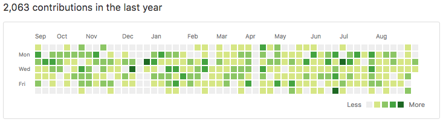

Managing Open Source Contributions in Large Organizations
James Ward | @_JamesWard
Engineering & Open Source Ambassador @ Salesforce.com


Past: Adobe, Heroku, Typesafe (now Lightbend)
Now: Salesforce, WebJars, & a 1-year old
Types of Contributions
- Employees contributing to external projects
- Open sourcing internal projects
- External contributors
Why do Open Source?
- Build trust with customers / partners
- Create an ecosystem around a library / tool / framework
- Unmerged forks are a maintenance nightmare
- Show leadership in the software industry
- Recruiting
But it is hard...
Security Concerns
- Are external contributions trustworthy?
- Am I leaking sensitive IP?
Quality Concerns
- External contributions increase my maintenance burden
- Am I making something public that is embarrassing?
Legal Concerns
- Patent Issues
- Ownership Issues
- License Issues
Solutions
- Do Nothing
- Use a Foundation
- Build Tools
Do Nothing
- Pro: It is easy
- Con: Does not make the legal team happy
- Pro: Do-it-yourself governance
- Con: Do-it-yourself governance
- Pro: Do-it-yourself infrastructure
- Con: Do-it-yourself infrastructure
Use a Foundation
- Pro: Infrastructure out-of-the-box
- Con: Heavy governance
- Pro: Greater trust with customers / partners
- Con: Contribution process can be a legal battle
- Pro: Signal of project maturity
- Con: Can be a good way to lose great engineers
Build Tools
- Pro: Tackle biggest risks
- Con: Not much off-the-shelf
- Pro: GitHub provides a great foundation
- Con: Custom tools require ownership & maintenance
- Pro: Good opportunity for 20% time / side projects
- Con: Testing tools can be challenging
Biggest Risks / Requirements
- Contributor License Agreements
- License Audit
- Security Audit
- Patent Audit
- Sensitive Info in Code
Process, Process, Process
- Outgoing & Project
- In-take Form
- Instructions on License stuff
- Legal Review (Patent & License)
- Security Review
- Eng Marketing Review
- CCLA?
Other Challenges
- No single owner / team
- Lawyers
- Execs & IP
- Large investment in project management
- Once approved, hands off?
- Internal Forks?
Demo Time!
There is a cost to free.
Questions?
Reach out: @_JamesWard